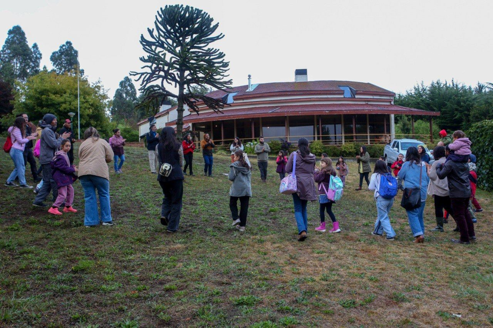
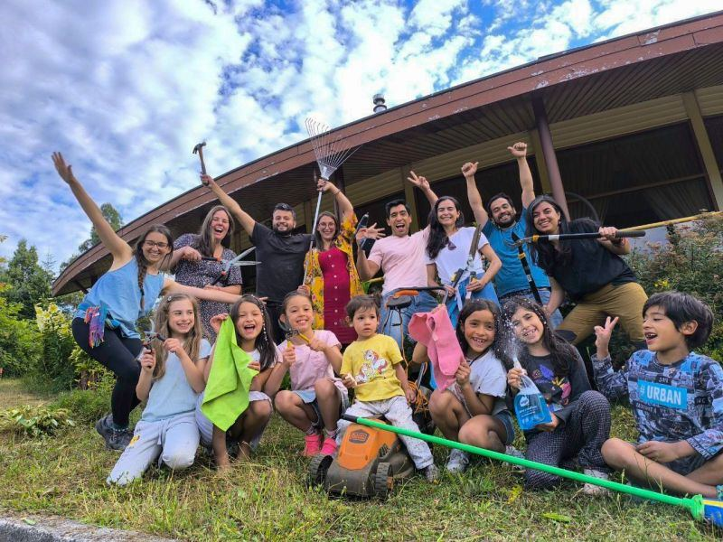
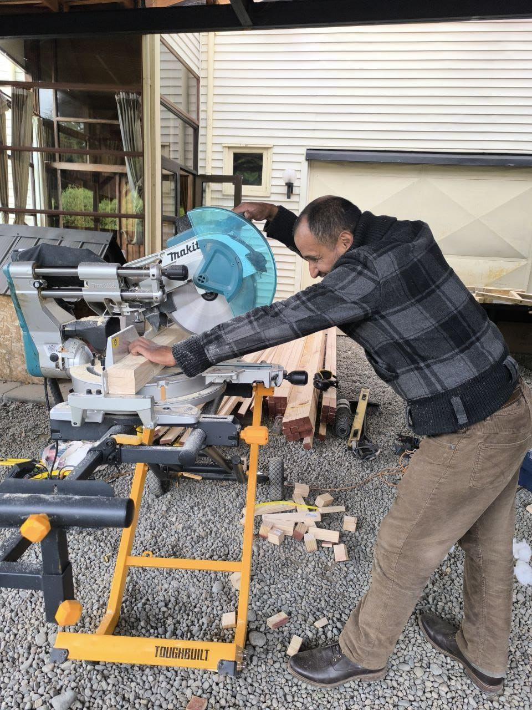

Colegio Waldorf Trekan
Educación con el corazón, en armonía con la naturaleza
Educación con el corazón, en armonía con la naturaleza
En el corazón de Puerto Varas, nace Trekan, una comunidad educativa inspirada en la pedagogía Waldorf que acompaña a niñas y niños de 3 a 14 años en su desarrollo integral.
Trekan significa caminante en mapudungun: un ser que decide encaminarse hacia el mundo… y hacia sí mismo.
Inspirados en Rudolf Steiner, entendemos al niño como un ser espiritual en evolución. Nuestra educación armoniza el pensamiento, el sentir y la voluntad a través del arte, el ritmo y el movimiento.
Matemáticas, lenguaje e historia se viven con las manos, el corazón y la mente.
Acompaña al niño durante varios años, creando un vínculo profundo y seguro.
Huerta, carpintería, salidas al bosque y celebración de las estaciones.
Contenidos integrados: arte, música, manualidades y movimiento.
Formar personas libres, conscientes, creativas y comprometidas con su entorno, mediante una educación que armonice el conocimiento, el arte y la acción.
Ser una comunidad educativa referente en el sur de Chile, por su capacidad de cultivar el respeto, la belleza y el sentido profundo del aprendizaje.
Respeto, cuidado del entorno, trabajo colaborativo, diversidad, libertad responsable, verdad y belleza.
Yabel Painemil: Comunicadora Audiovisual, docente intercultural bilingüe, formación Waldorf básica y especialista en Gimnasia Bothmer.
Ivonne Parada: Trabajadora Social UV, especialista en convivencia escolar con formación en peritaje social, polivagal, gestalt.
Sleater Martínez: Educadora de Párvulos, cursando formación Waldorf en fundación arche.
Felipe Vivanco: Administrador Público UV, con formación en NICSP, Neurociencias, GYDP. Terapeuta, Escuela Arica.
Gerard Muñoz: Ingeniero en Informática.
Momentos importantes para nuestra comunidad. ¡Te esperamos!
Reunión de toda la comunidad Trekan. Revisión de avances, proyectos y próximas celebraciones.
📍 Las Azaleas 96 · 18:30 hrsCelebración estacional en armonía con la naturaleza. Actividades para niños y familias al aire libre.
📍 Las Azaleas 96 · 10:00 hrs¿Quieres conocer Trekan antes de postular? Visítanos, recorre el espacio y conversa con el equipo.
📍 Las Azaleas 96 · 9:30 hrsLa noche más larga del año se convierte en celebración. Linternas, cuentos y comunidad.
📍 Las Azaleas 96 · 17:00 hrs¿Quieres participar o tienes dudas sobre alguna actividad?
💬 Consultar por WhatsAppEn Trekan, la comunidad es protagonista. Las familias participan activamente en la construcción del proyecto educativo.
Fomentamos una gestión participativa, horizontal y transparente, basada en la trimembración social: pedagógica, administrativa y comunitaria.
Mantente al día con las últimas novedades de nuestra comunidad educativa.

En el corazón del invierno, cuando las noches son más largas y la luz del sol escasea, nuestra comunidad se reúne para celebrar la Fiesta de la Luz. Esta tradición, propia de las escuelas Waldorf, nos invita a recordar que cada uno lleva dentro una luz que puede brillar incluso en la oscuridad.

Todo comenzó con una pregunta sencilla pero poderosa: ¿Y si nuestros niños pudieran aprender en un lugar donde la naturaleza, el arte y la vida se unieran para educar?



En días recientes, nuestra Comisión de Obras y Mantenimiento se reunió con un objetivo claro: dejar nuestro colegio listo y lleno de vida para recibir a nuestras niñas, niños y familias.



Nuestro currículo se basa en el desarrollo evolutivo del niño, siguiendo el modelo de Tobias Richter y las bases nacionales, integrando arte, naturaleza y pensamiento.
El aprendizaje no es abstracto: se vive, se siente, se hace. Cada conocimiento se integra con la voluntad del niño.
| Concepto | Valor | Detalles |
|---|---|---|
| Matrícula | $500.000 | En 2 cuotas: enero y febrero. No reembolsable. |
| Escolaridad Normal | $330.000/mes | Pago mensual, hasta el día 5 de cada mes. |
| Responsabilidad Social | $33.000 adicionales al mes | Aporte voluntario que fortalece becas para familias que requieren apoyo. |
| Cuota de Materiales | $160.000 | Anual, en 2 cuotas: marzo y junio. |
| Cuota de incorporación | $330.000 | Una sola cuota. |
Agradecemos a todas las familias que pueden sostener el aporte de Responsabilidad Social. Cada diferencia contribuye a sostener becas y fortalecer nuestra comunidad educativa inclusiva.
Si deseas participar en el proyecto pero necesitas un arancel diferenciado, conversaremos contigo con empatía. Evaluaremos tu situación socioeconómica y buscaremos opciones sostenibles, incluso con aporte en labores operativas o iniciativas según tus habilidades.
No es obligatorio. Opciones disponibles:
Si no contratas seguro, deberás firmar el Mandato Parental sobre atención de urgencia al momento de la matrícula.
Jornada: 8:00 a 14:00 hrs, de lunes a viernes.
Aquí respondemos las consultas más comunes sobre nuestra comunidad educativa.
La pedagogía Waldorf acompaña el desarrollo integral del niño —mente, corazón y manos— a través de experiencias vivenciales, arte, naturaleza y comunidad. No solo enseñamos contenidos: cultivamos curiosidad, creatividad y voluntad.
Funcionamos con un máximo de 16 niñas y niños por curso. Este tamaño permite un acompañamiento personalizado y una relación cercana entre estudiantes, docentes y familias.
La evaluación es cualitativa y continua, basada en informes narrativos y portafolios. Observamos el desarrollo integral del niño: su pensamiento, sentimientos, voluntad y habilidades sociales. No usamos notas ni calificaciones, sino retroalimentación detallada que acompaña el proceso de aprendizaje.
Significa que, la normativa chilena establece que los estudiantes de colegios sin reconocimiento deben rendir Exámenes Libres de Validación de Estudios en establecimientos designados por el Mineduc. Al aprobar, reciben sus certificados oficiales de curso o nivel, equivalentes a los de cualquier colegio reconocido. Es responsabilidad de cada familia realizar la inscripción de manera online o presencial en el Departamento Provincial de Educación por parte del padre/madre/tutor.
👉 Más información oficial en el sitio del Ministerio de Educación de Chile: Exámenes de Validación de Estudios – Ayuda Mineduc
Los estudiantes Waldorf en Chile suelen obtener calificaciones de buenas a muy buenas en los exámenes libres del Ministerio de Educación. La gran mayoría alcanza promedios superiores al aprobado, y cerca del 90% obtiene notas entre 5,0 y 7,0, lo que corresponde a un desempeño bueno o sobresaliente según la escala chilena.
Aunque la pedagogía Waldorf no se basa en pruebas tradicionales, los estudiantes cuentan con herramientas sólidas de aprendizaje que les permiten enfrentar con éxito las evaluaciones del Estado.
👉 Puedes leer más en estas fuentes:
Estudio sobre educación alternativa (Scielo) | Ciencia Latina |
CIPER Chile |
Trinus - Rendimiento Waldorf |
La Tercera - Generación Waldorf
Sí, ofrecemos experiencias en carpintería, arte y manualidades, cocina, música, cuentos, huerta, euritmia y movimiento. Estas actividades están integradas en la jornada escolar, entendiendo que el aprendizaje se vive con todo el ser.
Actualmente no ofrecemos transporte ni alimentación. Valoramos que las familias puedan acompañar a sus hijos al inicio y término del día. En cuanto a la alimentación, los niños traen su propio almuerzo, y promovemos hábitos saludables y conciencia sobre los alimentos.
¡Por supuesto! Creemos que la mejor manera de conocer Trekan es viviendo una mañana en nuestra comunidad. Escríbenos por WhatsApp para agendar tu visita.
El proceso de admisión está abierto todo el año, siempre que haya cupos disponibles. Te recomendamos postular con anticipación para asegurar tu lugar.
Puedes escribirnos directamente a través del botón de WhatsApp que ves en pantalla o usar el formulario "Postula aquí" para que podamos enviarte toda la información.
Un espacio cálido, natural y bien equipado en Puerto Varas. Ideal para talleres, reuniones y eventos con propósito.

Priorizamos actividades educativas, talleres de crecimiento personal, reuniones comunitarias y eventos que promuevan valores de respeto, conexión con la naturaleza y desarrollo humano integral.
Lunes a viernes: Después de las 15:00 hrs
Fines de semana: Todo el día
Vacaciones escolares: Horario flexible
Coordinación: coordinacion@colegiowaldorftrekan.cl
WhatsApp: +56 9 6776 5106
Ubicación: Las Azaleas 96, Puerto Varas
La puerta de Trekan siempre está abierta. Escríbenos — respondemos rápido.
Las Azaleas 96, Parque Ivian 1
Puerto Varas, Chile